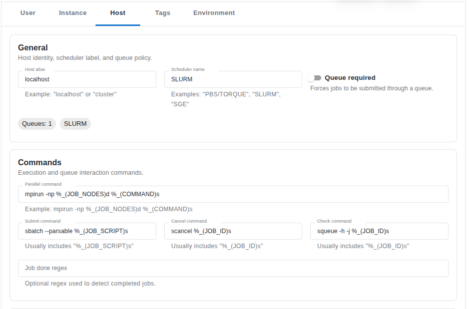
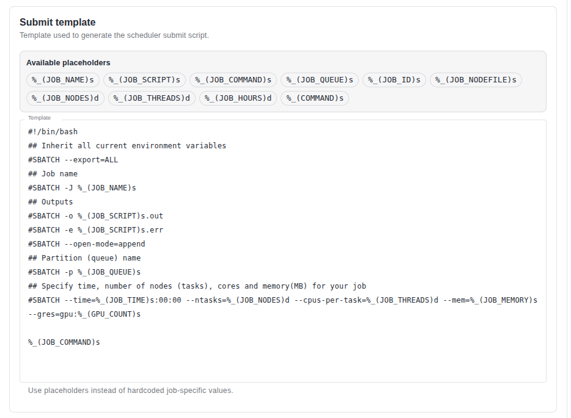
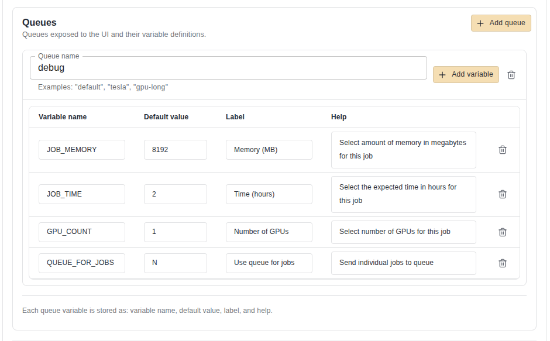

Hosts and Queues¶
The Host section in ScipionWeb Settings controls how protocol executions are submitted, monitored, and cancelled when they run through a queue system.
Use this page when you need to configure ScipionWeb to run protocols locally, through a scheduler, or through a SLURM queue.

General host configuration in ScipionWeb Settings.
What this settings area is for¶
Scipion protocols can be executed directly, but production and shared environments often need a queue system. A queue system controls when jobs start, how many resources they request, how jobs are cancelled, and how running jobs are monitored.
The Host settings area lets ScipionWeb define:
- the host entry used for protocol execution
- how a job script is generated
- how the job is submitted to the scheduler
- how ScipionWeb checks whether the job is still running
- how a queued or running job is cancelled
- which queues and resource fields are exposed to users
For SLURM, this normally means that ScipionWeb writes a job script and submits it with sbatch.
Configured from the web interface
In ScipionWeb, host and queue settings are managed from Settings > Host. You do not need to manually edit hosts.conf for the ScipionWeb workflow described on this page. The examples below show the values that should be entered in the web form.
How ScipionWeb manages queued execution¶
When a protocol is launched through a configured host, the flow is usually:
- the user launches a protocol from the project workflow or protocol form
- Scipion prepares the protocol command that must be executed
- ScipionWeb builds a queue script from the host submit template configured in Settings
- template placeholders are replaced with protocol and queue values
- the submit command sends the script to the scheduler
- the scheduler returns a job id
- ScipionWeb stores or tracks that job id
- status checks use the configured check command
- cancellation uses the configured cancel command
- protocol logs and outputs are reviewed after execution finishes
This means the Host configuration is the bridge between Scipion protocol execution and the external scheduler.
Host settings affect protocol execution
Changes in this section can affect new protocol runs immediately. Avoid editing queue commands, templates, or resource definitions while users are launching or validating workflows unless the change is intentional.
General host configuration¶
The general section defines the identity and basic behavior of the execution host.
Typical fields include:
- host name or display name
- whether the host is mandatory
- submit prefix or job naming prefix
- parallel command used by Scipion when MPI-style execution is required
- general metadata used by the execution backend
A common Scipion-style parallel command is:
mpirun -np %_(JOB_NODES)d %_(COMMAND)s
The important point is that ScipionWeb does not hardcode the scheduler behavior. Instead, it keeps the scheduler-specific logic in the Host settings.
Submit configuration¶
The submit section defines how ScipionWeb talks to the queue system.

Submit configuration with scheduler commands and job script template.
For SLURM, the key command values are usually:
| Field | Value |
|---|---|
| Submit command | sbatch --parsable %_(JOB_SCRIPT)s |
| Cancel command | scancel %_(JOB_ID)s |
| Check command | squeue -h -j %_(JOB_ID)s |
| Submit prefix | scipion |
The submit template is the script body that ScipionWeb generates for each protocol run. It usually contains scheduler directives, output/error file locations, resource requests, optional environment activation, and finally the protocol command.
A simplified SLURM submit template looks like this:
#!/bin/bash
#SBATCH --export=ALL
#SBATCH -J %_(JOB_NAME)s
#SBATCH -o %_(JOB_SCRIPT)s.out
#SBATCH -e %_(JOB_SCRIPT)s.err
#SBATCH --open-mode=append
#SBATCH -p %_(JOB_QUEUE)s
#SBATCH --time=%_(JOB_TIME)s:00:00
#SBATCH --ntasks=%_(JOB_NODES)d
#SBATCH --cpus-per-task=%_(JOB_THREADS)d
#SBATCH --mem=%_(JOB_MEMORY)s
%_(JOB_COMMAND)s
Use sbatch --parsable when possible because it returns a cleaner SLURM job id, which is easier for ScipionWeb to track.
Activate the correct environment when needed
If a queued job fails with No module named pyworkflow, the scheduler is probably running the job outside the expected Scipion Python environment. Add the required conda or environment activation before %_(JOB_COMMAND)s in the submit template.
Queue configuration¶
The queue section defines which queues are available and which resource parameters users can choose when launching protocols.

Queue configuration with user-facing resource fields.
A queue definition normally maps a queue name to a list of parameters. Each parameter defines:
- the internal key used in the submit template
- the default value
- the label shown to the user
- the help text shown in the UI
Example CPU queue fields:
| Queue | Key | Default | Label | Help text |
|---|---|---|---|---|
debug |
JOB_MEMORY |
8192 |
Memory (MB) |
Select memory in megabytes |
debug |
JOB_TIME |
2 |
Time (hours) |
Select expected time in hours |
The queue name must match the scheduler partition or queue name used in the submit template. For SLURM, if the submit template uses:
#SBATCH -p %_(JOB_QUEUE)s
then JOB_QUEUE should correspond to an existing SLURM partition, such as debug, cpu, gpu, or the site-specific partition name.
SLURM overview¶
SLURM is a workload manager used to submit and manage jobs in a queue. In a minimal single-node setup, the same machine acts as both controller and compute node.
This is useful for:
- development and testing
- reproducing queue execution issues
- validating Scipion queue integration before using a larger cluster
- local CPU/GPU scheduling on a workstation or server
A typical single-node SLURM stack includes:
mungefor authentication between SLURM daemonsslurmctldas the controller daemonslurmdas the compute-node daemonsbatchto submit jobssqueueto monitor jobsscancelto cancel jobs- optional GRES configuration for GPU scheduling
Install SLURM packages¶
On Ubuntu or Debian-like systems, install SLURM and MUNGE with:
sudo apt update
sudo apt install -y munge slurm-wlm slurm-client
Then confirm that the main commands are available:
which sbatch
which squeue
which scancel
which slurmd
which slurmctld
Some older distributions may use /etc/slurm-llnl/ instead of /etc/slurm/ for configuration files.
Enable MUNGE¶
MUNGE must be running before SLURM services can operate correctly.
sudo systemctl enable munge
sudo systemctl restart munge
munge -n | unmunge
The last command should decode a MUNGE credential without errors.
Collect node information¶
Use the short hostname and SLURM hardware autodetection to prepare the node definition.
hostname -s
slurmd -C
Example output:
myhost
NodeName=myhost CPUs=16 Boards=1 SocketsPerBoard=1 CoresPerSocket=8 ThreadsPerCore=2 RealMemory=31800
Use the values from your real machine. Do not copy CPU, memory, socket, or thread values from examples without checking your own host.
Create runtime directories¶
Create spool and log directories and assign ownership to the slurm user.
sudo mkdir -p /var/spool/slurmd
sudo mkdir -p /var/spool/slurmctld
sudo mkdir -p /var/log/slurm
getent passwd slurm
sudo chown -R slurm:slurm /var/spool/slurmd
sudo chown -R slurm:slurm /var/spool/slurmctld
sudo chown -R slurm:slurm /var/log/slurm
It is normal for the slurm user to have /usr/sbin/nologin as its shell.
Minimal CPU-only SLURM configuration¶
The main SLURM configuration file is usually:
/etc/slurm/slurm.conf
A minimal CPU-only single-node configuration can look like this:
ClusterName=localcluster
SlurmctldHost=myhost
SlurmUser=slurm
AuthType=auth/munge
MpiDefault=none
ProctrackType=proctrack/linuxproc
ReturnToService=2
SlurmctldPidFile=/run/slurmctld.pid
SlurmdPidFile=/run/slurmd.pid
SlurmdSpoolDir=/var/spool/slurmd
StateSaveLocation=/var/spool/slurmctld
SwitchType=switch/none
TaskPlugin=task/affinity
SchedulerType=sched/backfill
SelectType=select/cons_tres
SelectTypeParameters=CR_Core_Memory
AccountingStorageType=accounting_storage/none
JobCompType=jobcomp/none
JobAcctGatherType=jobacct_gather/none
SlurmctldDebug=info
SlurmdDebug=info
NodeName=myhost CPUs=16 Boards=1 SocketsPerBoard=1 CoresPerSocket=8 ThreadsPerCore=2 RealMemory=31800 State=UNKNOWN
PartitionName=debug Nodes=myhost Default=YES MaxTime=INFINITE State=UP
Replace myhost with hostname -s, and replace the hardware values with the output from slurmd -C.
Add GPU support with GRES¶
GPU scheduling in SLURM is configured through GRES.
First confirm that the operating system sees the GPU:
nvidia-smi -L
ls -lh /dev/nvidia*
For one NVIDIA GPU, create or edit:
/etc/slurm/gres.conf
Example:
NodeName=myhost Name=gpu File=/dev/nvidia0
For two GPUs:
NodeName=myhost Name=gpu File=/dev/nvidia0
NodeName=myhost Name=gpu File=/dev/nvidia1
Set safe ownership and permissions:
sudo chown root:root /etc/slurm/gres.conf
sudo chmod 644 /etc/slurm/gres.conf
Then add the global GRES type to slurm.conf:
GresTypes=gpu
And add the GPU count to the node line:
NodeName=myhost CPUs=16 Boards=1 SocketsPerBoard=1 CoresPerSocket=8 ThreadsPerCore=2 RealMemory=31800 Gres=gpu:1 State=UNKNOWN
Validate GRES detection with:
sudo slurmd -G
sudo slurmd -C
A valid slurmd -G output should report the GPU file, for example /dev/nvidia0.
Start and verify SLURM services¶
After editing slurm.conf or gres.conf, restart the services.
sudo systemctl restart munge
sudo systemctl restart slurmctld
sudo systemctl restart slurmd
Enable them at boot:
sudo systemctl enable munge
sudo systemctl enable slurmctld
sudo systemctl enable slurmd
Check service status:
systemctl status munge --no-pager
systemctl status slurmctld --no-pager
systemctl status slurmd --no-pager
Run basic health checks:
scontrol ping
sinfo
sinfo -o "%P %N %G %t"
scontrol show node myhost | grep -E "State=|Reason=|Gres="
If the node is drained after fixing a problem, clear the drain state:
sudo scontrol update NodeName=myhost State=UNDRAIN
Some SLURM versions reject State=RESUME; use State=UNDRAIN in that case.
Validate SLURM before connecting ScipionWeb¶
Before configuring ScipionWeb, validate SLURM directly with small CPU and GPU jobs.
CPU test:
cat > /tmp/test_slurm_cpu.sh <<'EOF'
#!/bin/bash
#SBATCH -p debug
#SBATCH -J test_cpu
#SBATCH --time=00:02:00
#SBATCH --ntasks=1
#SBATCH --cpus-per-task=1
#SBATCH --mem=1024
#SBATCH -o /tmp/test_slurm_cpu.out
#SBATCH -e /tmp/test_slurm_cpu.err
echo "Node: $(hostname)"
echo "Job ID: $SLURM_JOB_ID"
date
sleep 10
date
EOF
sbatch --parsable /tmp/test_slurm_cpu.sh
squeue
cat /tmp/test_slurm_cpu.out
cat /tmp/test_slurm_cpu.err
GPU test:
cat > /tmp/test_slurm_gpu.sh <<'EOF'
#!/bin/bash
#SBATCH -p debug
#SBATCH -J test_gpu
#SBATCH --time=00:05:00
#SBATCH --ntasks=1
#SBATCH --cpus-per-task=1
#SBATCH --mem=2048
#SBATCH --gres=gpu:1
#SBATCH -o /tmp/test_slurm_gpu.out
#SBATCH -e /tmp/test_slurm_gpu.err
echo "Node: $(hostname)"
echo "Job ID: $SLURM_JOB_ID"
echo "CUDA_VISIBLE_DEVICES=$CUDA_VISIBLE_DEVICES"
nvidia-smi
EOF
sbatch --parsable /tmp/test_slurm_gpu.sh
squeue
cat /tmp/test_slurm_gpu.out
cat /tmp/test_slurm_gpu.err
Recommended validation order:
- make CPU jobs work
- configure GPU/GRES only after CPU submission works
- run a manual GPU job
- configure ScipionWeb through Settings > Host
- run a small Scipion protocol through the queue
Configure ScipionWeb for a CPU SLURM queue¶
Configure this from Settings > Host in the ScipionWeb interface. The goal is to enter the SLURM commands, the submit template, and the queue fields in the web form. Manual editing of hosts.conf is not required for this workflow.
General section¶
| Field | Recommended value |
|---|---|
| Name | SLURM |
| Mandatory | False, unless every protocol must use this host |
| Parallel command | mpirun -np %_(JOB_NODES)d %_(COMMAND)s |
| Submit prefix | scipion |
Submit section¶
| Field | Recommended value |
|---|---|
| Submit command | sbatch --parsable %_(JOB_SCRIPT)s |
| Cancel command | scancel %_(JOB_ID)s |
| Check command | squeue -h -j %_(JOB_ID)s |
Submit template:
#!/bin/bash
### Inherit all current environment variables
#SBATCH --export=ALL
### Job name
#SBATCH -J %_(JOB_NAME)s
### Outputs
#SBATCH -o %_(JOB_SCRIPT)s.out
#SBATCH -e %_(JOB_SCRIPT)s.err
#SBATCH --open-mode=append
### Partition name
#SBATCH -p %_(JOB_QUEUE)s
### Resources
#SBATCH --time=%_(JOB_TIME)s:00:00
#SBATCH --ntasks=%_(JOB_NODES)d
#SBATCH --cpus-per-task=%_(JOB_THREADS)d
#SBATCH --mem=%_(JOB_MEMORY)s
%_(JOB_COMMAND)s
Queue section¶
Create a queue entry whose name matches the SLURM partition, for example debug.
| Key | Default | Label | Help text |
|---|---|---|---|
JOB_MEMORY |
8192 |
Memory (MB) |
Select memory in megabytes |
JOB_TIME |
2 |
Time (hours) |
Select expected time in hours |
After saving the Host settings, launch a small Scipion protocol and verify that ScipionWeb submits the job with sbatch, receives a job id, and tracks the job with squeue.
Configure ScipionWeb for a GPU SLURM queue¶
Configure GPU execution from Settings > Host as well. The only difference from the CPU setup is that the submit template must request GPU resources, and the queue section should expose a GPU parameter.
Before configuring this in ScipionWeb, confirm that SLURM already detects GPUs correctly with sudo slurmd -G, sinfo -o "%P %N %G %t", and a manual GPU sbatch test.
General and submit commands¶
Use the same general values and SLURM commands as the CPU setup:
| Field | Recommended value |
|---|---|
| Submit command | sbatch --parsable %_(JOB_SCRIPT)s |
| Cancel command | scancel %_(JOB_ID)s |
| Check command | squeue -h -j %_(JOB_ID)s |
GPU submit template:
#!/bin/bash
### Inherit all current environment variables
#SBATCH --export=ALL
### Job name
#SBATCH -J %_(JOB_NAME)s
### Outputs
#SBATCH -o %_(JOB_SCRIPT)s.out
#SBATCH -e %_(JOB_SCRIPT)s.err
#SBATCH --open-mode=append
### Partition name
#SBATCH -p %_(JOB_QUEUE)s
### Resources
#SBATCH --time=%_(JOB_TIME)s:00:00
#SBATCH --ntasks=%_(JOB_NODES)d
#SBATCH --cpus-per-task=%_(JOB_THREADS)d
#SBATCH --mem=%_(JOB_MEMORY)s
#SBATCH --gres=gpu:%_(GPU_COUNT)s
%_(JOB_COMMAND)s
Queue section¶
Create or update the queue entry in the Host queue form. For a debug partition with GPU support, use fields like:
| Key | Default | Label | Help text |
|---|---|---|---|
JOB_MEMORY |
8192 |
Memory (MB) |
Select memory in megabytes |
JOB_TIME |
2 |
Time (hours) |
Select expected time in hours |
GPU_COUNT |
1 |
Number of GPUs |
Select number of GPUs |
Make sure the queue name matches the real SLURM partition and that the node actually reports the requested GPU resources in sinfo and scontrol show node.
Monitor jobs¶
Useful commands while validating queued execution:
squeue
watch -n 1 squeue
watch -n 1 'squeue -o "%.10i %.9P %.30j %.8u %.2t %.10M %.6D %.20b %R"'
watch -n 1 'sinfo -o "%P %N %G %t"'
scontrol show job <JOBID> | grep -i tres
watch -n 1 nvidia-smi
A job can request gpu:1 and still show little or no GPU activity if the application has not reached a CUDA-heavy step yet.
Logs and troubleshooting¶
Inspect SLURM daemon logs with:
journalctl -u slurmctld -n 100 --no-pager
journalctl -u slurmd -n 100 --no-pager
journalctl -u slurmctld -f
journalctl -u slurmd -f
If physical log files are configured, check:
ls -lh /var/log/slurm/
sudo find /var/log -iname "*slurm*"
grep -i log /etc/slurm/slurm.conf
Common issues:
| Symptom | Likely cause | Action |
|---|---|---|
| Requested node configuration is not available | Job asks for resources the node does not provide, often GPU/GRES | Check #SBATCH --gres, sinfo -o "%P %N %G %t", and scontrol show node |
| GRES/GPU count is lower than configured | slurm.conf declares GPUs but slurmd detects fewer devices |
Check /etc/slurm/gres.conf, /dev/nvidia0, nvidia-smi -L, and sudo slurmd -G |
Node is DOWN or DRAINED |
Previous configuration error or failed health check | Fix the cause, restart services, then run sudo scontrol update NodeName=myhost State=UNDRAIN |
| Invalid node state specified | The SLURM version may not accept RESUME |
Use State=UNDRAIN |
No module named pyworkflow |
Job is using the wrong Python environment under SLURM | Activate the Scipion environment in the submit template before %_(JOB_COMMAND)s |
Practical checklist¶
Before considering the Host configuration ready, verify:
- SLURM services are running
sinfoshows the expected partition- CPU jobs can be submitted manually with
sbatch - GPU jobs can be submitted manually if GPU execution is required
sbatch --parsablereturns a clean job idsqueue -h -j <jobid>works for status checksscancel <jobid>cancels jobs correctly- the Scipion Python environment is available inside submitted jobs
- the queue names in ScipionWeb match real SLURM partitions
- the resource keys in the queue section match placeholders in the submit template
- a small Scipion protocol can run through the configured queue
Good practice¶
- start with a simple CPU queue before adding GPU support
- keep queue names aligned with real scheduler partitions
- expose only the resource fields users actually need
- use sensible defaults for memory, time, and GPU count
- configure Host settings from the web interface instead of manually editing
hosts.conf - keep the submit template readable and documented
- validate scheduler commands outside ScipionWeb before debugging ScipionWeb itself
- document site-specific queue policies for shared installations
When to use this configuration¶
Use Host and Queue settings when:
- multiple users submit protocols to the same server
- protocol execution should be controlled by a scheduler
- GPU resources need explicit reservation
- long-running jobs should be visible in a queue
- administrators need central control over memory, time, CPU, and GPU requests
- ScipionWeb must integrate with an existing SLURM installation
For simple local development without queue scheduling, a minimal local execution setup may be enough. For shared production environments, a queue-backed Host configuration is strongly recommended.